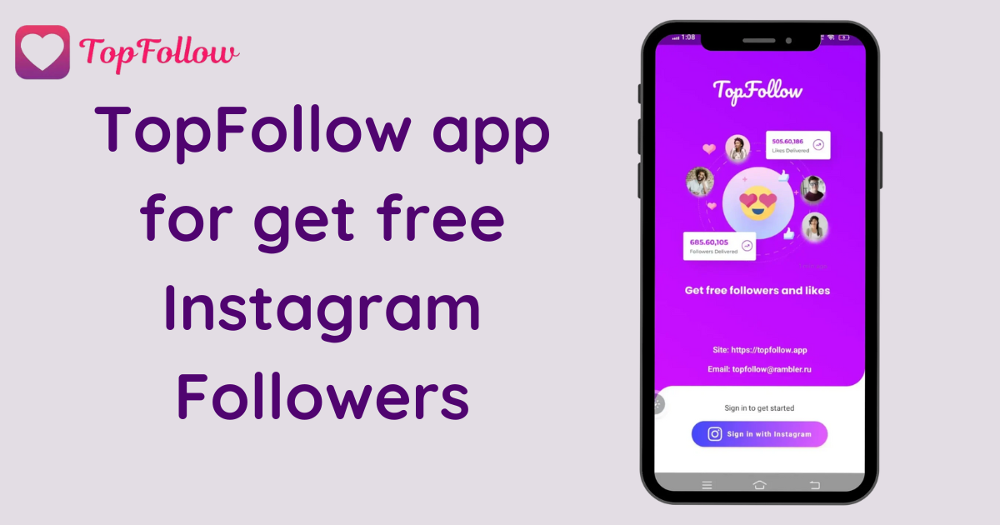

Do you dream of skyrocketing your Instagram followers count overnight? Imagine waking up to an inbox full of new likes and followers without lifting a finger. It sounds magical, right? Well, welcome to the world of TopFollow APK — the app that makes this dream a reality, offering a fast track to boosting your Instagram presence. In this article, we’ll dive deep into what TopFollow APK is, how it works, and how you can use it to get unlimited followers and likes.
And, of course, I’ll sprinkle in a little humor along the way to keep things interesting because hey, who doesn’t love a good laugh while planning to take over the Instagram world?
What is TopFollow APK?
First off, let’s break down what we’re dealing with here. Topfollow APK is an Android application that helps users gain followers and likes on Instagram. The app operates on a simple coin-based system, where you earn coins by following other users or liking their posts. You can then spend these coins to get your own followers and likes. And the best part? The app is completely free! You don’t have to sell your soul or empty your bank account to boost your Instagram numbers.
In short: It’s like Instagram's version of a give-and-take relationship. You scratch someone’s back by following them, and in return, someone scratches yours by following you.
Think of it like one big digital circle of back-scratching. (Hey, we’re all friends here, right?)
How Does TopFollow APK Work?
Now, you might be wondering, “How does this magical app work?” Let me break it down for you.
- Download the TopFollow APK: First things first, you need to download the TopFollow APK file from a reliable source. Unfortunately, you won’t find it in the Google Play Store, because... well, Instagram isn’t exactly thrilled about people using third-party apps to gain followers. (Who knew?)
- Install the App: Once the APK file is downloaded, install it on your Android device. Make sure to enable “Install from unknown sources” in your device settings.
- Login to Your Instagram Account: After installing the app, you’ll need to log in using your Instagram credentials.
- Earn Coins: You can earn coins by completing simple tasks like following other users or liking their posts.
- Spend Coins to Get Followers and Likes: Once you’ve earned enough coins, you can spend them to get followers or likes on your own Instagram account.
The Promocode for Unlimited Coins
Okay, so here’s where things get even more exciting. One of the coolest features of TopFollow APK is the ability to use promo codes to get extra coins.
Benefits of Using TopFollow APK
At this point, you’re probably thinking, “Alright, I get it. TopFollow APK helps me get followers. But what else?” Well, here’s a breakdown of the benefits:
- It’s Free: No need to spend a fortune on Instagram ads or influencer shoutouts. You can use TopFollow APK without paying a single penny. Your bank account will thank you.
- Fast Results: Unlike traditional methods of growing your Instagram account (aka posting consistently, using hashtags, begging your friends to follow you), TopFollow APK provides instant results. The moment you spend your coins, followers and likes will start rolling in.
- Easy to Use: The app is user-friendly, even for those who aren’t tech-savvy. If you can post a selfie on Instagram, you can figure out how to use TopFollow APK. No rocket science involved, I promise.
- Promocodes for Extra Coins: The ability to use promo codes is a major plus. It’s like finding a cheat code for Instagram growth. Who doesn’t love a good hack?
- It’s Fun: Let’s face it, there’s something undeniably satisfying about watching your follower count go up. It’s like seeing your virtual stock rise, except you’re not investing in anything except your time. (And maybe a little bit of sanity when you realize you’re spending hours on Instagram. But we won’t talk about that.)
Is It Safe to Use TopFollow APK?
Here comes the million-dollar question: Is TopFollow APK safe to use?
Yes, in the sense that many users have reported gaining real followers and likes without facing any major issues. No, in the sense that Instagram doesn’t officially endorse third-party apps like TopFollow. So, always proceed with caution.
To be on the safe side, it’s recommended that you use a secondary Instagram account for testing purposes. You can experiment with TopFollow APK there before deciding whether to use it on your main account.
Final Thoughts
At the end of the day, TopFollow APK is a fun and easy way to boost your Instagram followers and likes without spending a dime. Just remember to use it wisely, follow Instagram’s guidelines, and don’t go overboard — because let’s be real, nobody likes the guy who buys all his followers.
So, go ahead, give it a try, and watch your Instagram presence soar. And who knows? Maybe one day you’ll be Instagram famous, sipping lattes in Bali while influencers everywhere envy your perfectly curated feed. Or, you know, you’ll just have a few more followers to show off at your next social gathering. Either way, it’s a win.